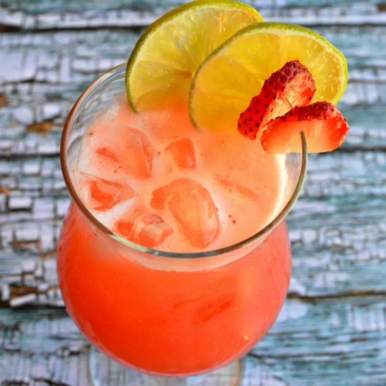

Ty's AQUA DE FRESA RECIPE

Description:
in this recipe you will learn how to make my AGUA DE FRESA, these are goated because they are the great of all time, no one can make a better agua de fresa than me. Im here today to teach you how to make it.
Ingredients:
- 4 cups strawberries, sliced
- 1 cup white sugar
- 8 cups cold water, divided
- 5 cups ice for serving, or as needed
- 1 lime, cut into 8 wedges
- 8 fresh mint sprigs
Steps:
- Mix together strawberries, sugar, and 1 cup cold water in a medium bowl. Cover the bowl with plastic wrap and place in the refrigerator for 4 hours.
- Pour chilled strawberry mixture into a blender. Blend on high until smooth. Pour through a wire mesh strainer set over a large bowl; discard pulp and seeds. Stir remaining 7 cups cold water into strawberry juice until aqua de fresca is well combined.
- Fill glasses with ice. Pour aqua de fresca over ice. Garnish each serving with lime wedges and mint leaves.
back to home page